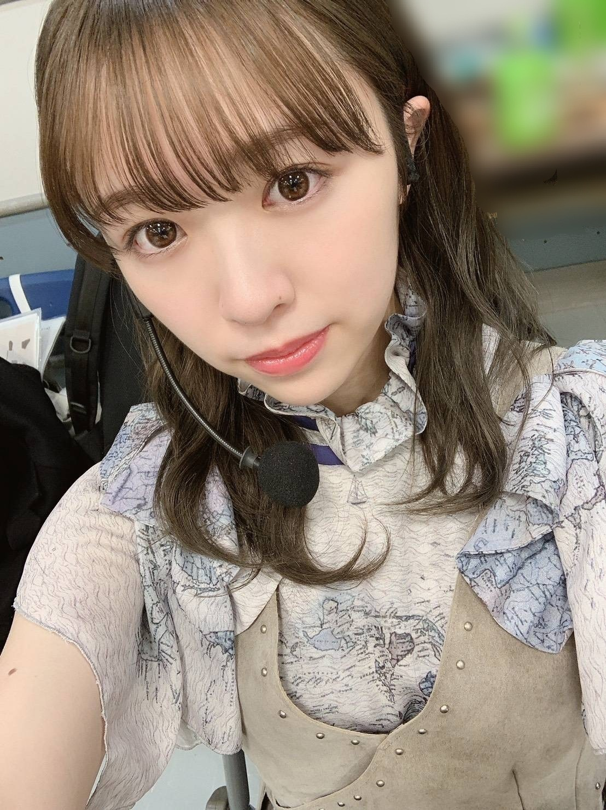
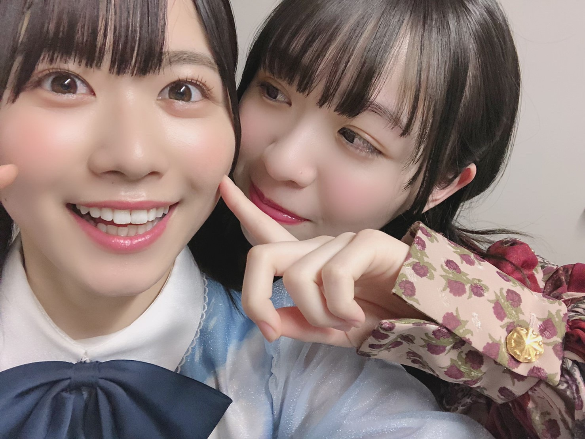
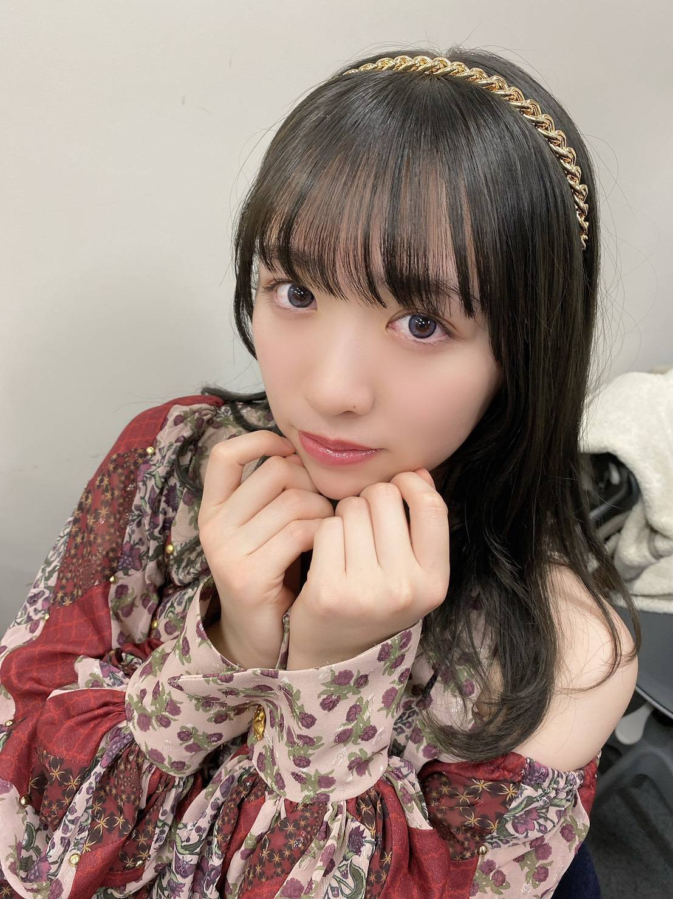
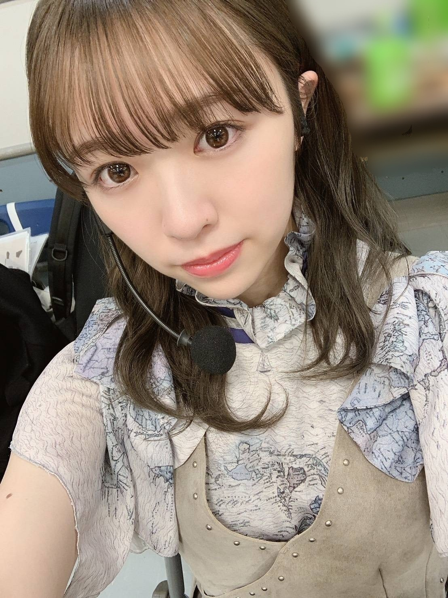
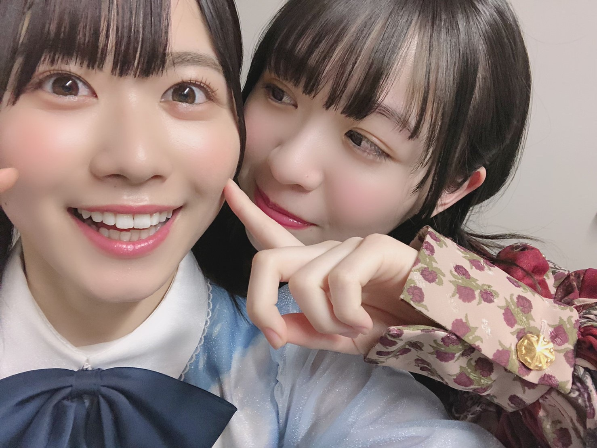
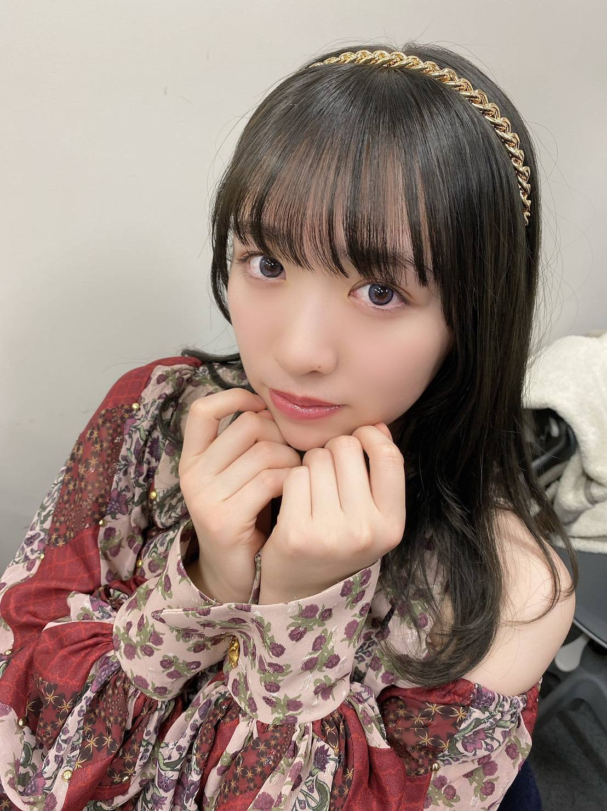

2020/0302Mon帽子は三色
皆様こんばんは！
8th YEAR BIRTHDAY LIVE が
無事終了いたしました。
お越しくださった皆様、ありがとうございました！
リハーサル期間はとても大変だったけど、
出させた頂いた1曲1曲が大切で
また素敵な思い出となりました。
思い入れがある曲で言えば
風船は生きているの演出では
久しぶりに
♪穴が開いた気がするんだ〜
の後のみんなが私を囲んで指を
指してくれるところを踊れて、
私は凄く嬉しかったです。
後ろのスクリーンでは砂絵を使った
物語を作ってくださっていて
スタッフの皆様にも大感謝でした。
あの時のオリジナルメンバーはもう
ほとんどいなくて寂しい気持ちもあったけど
新たにポジションに入ってくれていた子達が
楽しそうに踊っているのを見て
とても嬉しかったです。
君が扇いでくれた
間奏で一人で踊らさせていただきました。
たった数秒の世界だけど
4日目と言うこともあり、
気持ち込め込めで踊りました。
少しでも伝わってくれていたら嬉しいです
乃木坂46メンバーみんなの良さが詰まった
ライブで、どの曲も演出もとても良かった！
みんな可愛い！！！！
メンバーの顔一人一人の笑顔を見ながら
本当にみんな可愛くて綺麗で
このグループにいられて本当に幸せだなあと
思いました。

ゴルゴンゾーラ隊
8周年、改めておめでとう乃木坂46！
先日発表がありましたが、
3月7日に開催予定だった2期生ライブが
中止となりました。
楽しみにされていた皆様、申し訳ございません。
悔しいけれどそれでも皆さんの安全が少しでも
守られるなら、私は嬉しいです
次の機会があると信じて前を見るしかない！
皆さんに絶対お見せしたい！
だからそれまで、待っていてくださいね。

みり愛
2020/0123Thu傘模様
新成人の皆様、おめでとうございます。
私も遂に新成人を迎える事が出来ました
葉月、桃子、美月と乃木神社にて
成人式を行いました。感慨深い、、
今までずっとお姉さんメンバーの振袖姿を
写真で見てきていつかこうなりたいなあと
ずっと思ってきていたから
遂に自分が迎えるとなると、何だか恥ずかしく
嬉しくもありました！
メンバーから見たよ！素敵だった！という声を
頂いてとても嬉しかった〜

そして
NOGIZAKA46 Live in Taipei 2020
お越し下さった皆様、ありがとうございました！
皆様に会える機会ができた事が
何より嬉しかったです。
名前を一所懸命呼んでくれたり
タオルを掲げてくれたり
本当にありがとうございました！

デザイン性のある素敵なお花もありがとう。
勇気付けられます
来られなかった皆様も
コメントや握手会等で応援して下さり
ありがとうございました！
メンバーと101タワーに登ったり
沢山写真を撮ってふざけて
今回もすっごく楽しかったです
またすぐ来られるように
私達も精一杯精進してまいります
さゆ
悲しいって気持ちももちろんあるけど
きっとさゆとは卒業した後も
会えるって分かってるから悲しい顔は
本人には見せず笑顔で送り出したい。
いろんな所行っていろんな話したね
先輩後輩という関係がいつの間にかこんなに
仲良くなれて私は凄く嬉しい
さゆのパフォーマンスが好き！
白石さん
私が落ち込んでいた時
私の身体よりも大きな袋にお下がりのお洋服を
大量に入れて持ってきてくれた事
いきなり抱き締めてもそれ以上に
ぎゅーっと強く抱き締めてくれる事
2期生に対してかけてくれた大事な言葉
白石さんもさゆも強い背中は何度も見てきた、
苦しんでる姿は
後輩に見せた事がありません。
まだ時間は残っているので
みんなで思い出を沢山
作っていけたらいいなあ
そして！
"2期生の単独ライブ"が
昨日のまいちゅんのオールナイトニッポンにて
発表されました。
場所は代々木第一体育館
かなり前から話は頂いていたので
ファンの皆さんに早く言いたくて
うずうずしておりました、笑
素敵なものが見せられるよう、
全力で頑張ります。

みり愛
2019/1231Tue皆様良いお年を
今年も残すところあと数時間となってまいりました。
早いですねえ、あっという間です！

今年は沢山の歌番組に出演させて頂きました。
一つ一つ気持ちを込めて全力でパフォーマンスしました。
届いていたでしょうか、、！
そして昨日はレコード大賞に出演させて頂きました
受賞されたアーティストの皆様、
おめでとうございます！
そしてレコード大賞を受賞されたFoorinの皆さん
おめでとうございます！
Sing Out!は私の初めての選抜曲
まさかレコ大で踊れるとは思ってもいなくて
あんまり顔に緊張を出さないタイプですが
昨日は流石に物凄く緊張していたみたいで
周りのメンバーが「大丈夫だよ！」という
優しい言葉をかけてくれました。
あの場で披露出来たという事に
とても嬉しく、感謝をしています。

そして本日は紅白歌合戦
毎年出させて頂いている事を嬉しく思います！
今年はシンクロニシティ
欅坂46、日向坂46のみんなも参加してくれます！
そして内村さんも！
お忙しい中振り付けを覚えて下さり恐縮です、、、
全員で、心をぐっと掴めるようなパフォーマンスが
出来るよう精一杯披露させて頂きます！
宜しくお願い致します。

日向坂46の丹生明里ちゃん
私を見つけたら満面の笑みで風のように走ってきて
沢山お話してくれる姿が妹みたいで
可愛くて愛おしい(^ ^)
来年はすぐ会う！って約束したので
早く叶えましょうね！
紅白、宜しくね！

ポーズ考案・撮影:堀未央奈
20±SWEET2020JANUARY
週刊ヤングマガジン
週刊プレイボーイ
発売中です！オフショットなどはまた後々に。
今年も沢山応援して下さりありがとうございました
来年も宜しくお願い致します！
はああ、緊張する〜〜！！
それでは、行ってきます。
みり愛
今年も残すところあと数時間となってまいりました。
早いですねえ、あっという間です！

今年は沢山の歌番組に出演させて頂きました。
一つ一つ気持ちを込めて全力でパフォーマンスしました。
届いていたでしょうか、、！
そして昨日はレコード大賞に出演させて頂きました
受賞されたアーティストの皆様、
おめでとうございます！
そしてレコード大賞を受賞されたFoorinの皆さん
おめでとうございます！
Sing Out!は私の初めての選抜曲
まさかレコ大で踊れるとは思ってもいなくて
あんまり顔に緊張を出さないタイプですが
昨日は流石に物凄く緊張していたみたいで
周りのメンバーが「大丈夫だよ！」という
優しい言葉をかけてくれました。
あの場で披露出来たという事に
とても嬉しく、感謝をしています。
そして本日は紅白歌合戦
毎年出させて頂いている事を嬉しく思います！
今年はシンクロニシティ
欅坂46、日向坂46のみんなも参加してくれます！
そして内村さんも！
お忙しい中振り付けを覚えて下さり恐縮です、、、
全員で、心をぐっと掴めるようなパフォーマンスが
出来るよう精一杯披露させて頂きます！
宜しくお願い致します。

日向坂46の丹生明里ちゃん
私を見つけたら満面の笑みで風のように走ってきて
沢山お話してくれる姿が妹みたいで
可愛くて愛おしい(^ ^)
来年はすぐ会う！って約束したので
早く叶えましょうね！
紅白、宜しくね！

ポーズ考案・撮影:堀未央奈
20±SWEET2020JANUARY
週刊ヤングマガジン
週刊プレイボーイ
発売中です！オフショットなどはまた後々に。
今年も沢山応援して下さりありがとうございました
来年も宜しくお願い致します！
はああ、緊張する〜〜！！
それでは、行ってきます。
みり愛
2019/1207Sat乳製品
こんばんは！
FNS歌謡祭第一夜、見て下さった皆様
ありがとうございました！
円卓に座って色々なアーティストの方のライブを
生で観れて感じれて、素敵な空間でした。

11月17日 大阪個握

11月24日 幕張個握
レーンの前に行くと毎回テーマが違った
色とりどりの花が出迎えてくれてて
朝一に見るというのが一つの楽しみ。
いつもありがとうございます！

メンバーやヘアメイクさんに
「最近、背縮んだ？」と真面目に言われてしまい
嘘だと思っていたら
本当に他のメンバーやスタッフさんに
沢山言われるから
信憑性増してしまって、不安になってます、、笑
次身長測るのが怖いよ、、笑
みり愛
2019/1115Fri抹茶
遅くなり申し訳ありません。
幕張メッセにて個別握手会がありました

この服、とても好評でした。
お越し下さった皆様、
そして何より生誕祭を準備して下さった
生誕委員の皆様
ありがとうございました！
私の大好きが詰まった空間でした
とっても幸せでした。


私こんなに素敵なお花の数々を見た時
涙が出そうになりました、、
私がお花好きなのを知っていて
個性的なお花もあれば
自らの気持ちを存分に出して下さっている
お花もあってどれも大好きな色とお花ばかりでした！

これからも宜しくお願い致します。
みり愛